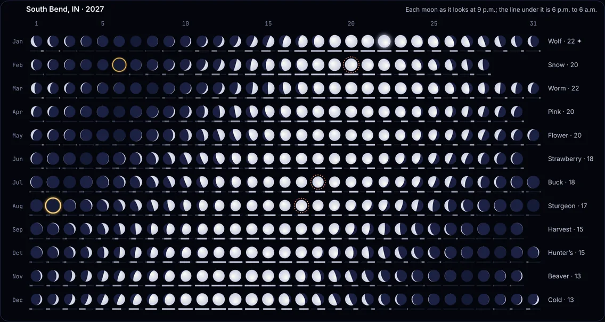

In 2027 the moon is full 12 times and new 13 times, and it rises about 50 minutes later each night on average, but not evenly. Around the Harvest Moon of Sept. 15, moonrise in Chicago comes only 20 to 26 minutes later each night, against 71 to 78 minutes around the March full moon. Winter full moons stay up longest: the Cold Moon of Dec. 13 is above Chicago for 16h 09m and the Strawberry Moon of June 18 for 8h 41m, while in Fairbanks, Alaska, the first stays up for 73 hours straight and the second never rises. The closest full moon, the Wolf Moon of Jan. 22 at 357,644 km, is 2027’s only supermoon.
Below, every night of the year is a moon, drawn at its real phase. Under each moon is a line showing when it’s up between 6 p.m. and 6 a.m. Switch to Night sky to see every moonrise and moonset of the year as streaks of light. Pick any of 65 places, from Utqiaġvik, Alaska, to Singapore, or any latitude, and any year from 1900 to 2100. It’s all calculated live in your browser.
By Shawn Nafziger · Published · Figures for 2027, from Jean Meeus’s lunar equations, checked against the US Naval Observatory
Anywhere
1 of 5
What does a year of moons look like?
In 2027 the moon is full 12 times and new 13 times. Each moon here is one night in South Bend, IN, drawn as it looks at 9 p.m. A lunar month is 29.5 days, so each full moon comes about a day earlier in the month than the last, and the full moons run in a diagonal down the field. The line under each moon is the night from 6 p.m. to 6 a.m., bright while the moon is up after dark. The longest moonlit night of the year starts on Dec. 12: 14h 50m of moonlight between sunset and sunrise. Hover or tap any moon for its moonrise and moonset.
2 of 5
Why does the moon rise later every night?
Because the moon travels east along its orbit, about 13° a day, so Earth has to turn a little farther each day to bring it back over the horizon. In South Bend, IN, moonrise comes on average 50 minutes later each night, but anywhere from 20 minutes to 83 minutes later. In this view each column is one night, noon to noon. The moon’s time above the horizon is a silver streak, brightest near full moon, and the streaks slant because each moonrise is later than the last.
Here the moon breaks the usual rhythm. This close to the pole it can stay up for days at a time, or stay below the horizon for days, so many nights have no moonrise at all. The silver streaks show when it’s up.
3 of 5
Why does the Harvest Moon seem to linger?
Around the Harvest Moon of Sept. 15, moonrise in South Bend, IN comes 20–26 min later each night, so a nearly full moon rises close to sunset several evenings in a row. Around the Snow Moon of Feb. 20 it comes 72–81 min later each night. The difference is the angle of the moon’s path to the horizon. On autumn evenings in the Northern Hemisphere that path lies low along the horizon, so a day’s travel barely delays the rise; in spring it climbs steeply. South of the equator it’s the other way around.
Near the poles the rule breaks down. Around the Harvest Moon of Sept. 15, moonrise in South Bend, IN comes 20–26 min later each night, and on other nights the moon doesn’t rise at all, because its path can run almost level with the horizon. Pick a place in the mid-latitudes, such as Chicago or London, to see the Harvest Moon linger.
4 of 5
When does the full moon stay up longest?
In winter. The full moon sits opposite the sun, so in winter it rides as high and as long as the summer sun. In South Bend, IN, the longest is the Cold Moon of Dec. 13 (up 16h 07m, 4:09 p.m. to 8:16 a.m.), and the shortest is the Strawberry Moon of June 18 (up 8h 42m, 9:36 p.m. to 6:19 a.m.). Far enough north, the winter full moon never sets and the summer one never rises: in Fairbanks, Alaska, the Cold Moon stays up for 73 hours straight.
5 of 5
Which moons are super, and which go dark?
The closest full moon of 2027 is the Wolf Moon of Jan. 22, 357,644 km away, and it’s the year’s only supermoon, a full moon closer than 360,000 km. The farthest is the Buck Moon of July 18, at 405,973 km; the closest looks about 14% wider. Eclipses: Feb. 6 (annular solar), Feb. 20 (penumbral lunar), July 18 (penumbral lunar), Aug. 2 (total solar) and Aug. 17 (penumbral lunar). A gold ring marks a solar eclipse at a new moon, and a red ring a lunar eclipse at a full moon (dashed when it’s penumbral, only a faint dimming).

Moon up between 6 p.m. and 6 a.m.✦ supermoonsolar eclipselunar eclipseMoon above the horizon, brighter when fullerWhite lines: moonrise (solid) and moonset (dashed)Green: today
The moon right now
—
Moonrise today
—
Next full moon
—
Next new moon
—
Moon phases 2027: every new moon, quarter and full moon
There are 12 full moons and 13 new moons in 2027, with two new moons in August (Aug. 2 and Aug. 31). The new moon of Aug. 2 brings the year’s total solar eclipse, which crosses southern Spain, North Africa and Egypt with up to 6 minutes 23 seconds of totality near Luxor. Times below are Eastern time; pick a place above for local dates and times.
Moon phases in 2027, Eastern time (EST, or EDT from March 14 to Nov. 7). Each row is one lunar month, starting at a new moon.
New moon
First quarter
Full moon
Last quarter
Jan. 7, 3:24 p.m.
Jan. 15, 3:34 p.m.
Jan. 22, 7:17 a.m.
Jan. 29, 5:55 a.m.
Feb. 6, 10:56 a.m. annular solar eclipse
Feb. 14, 2:58 a.m.
Feb. 20, 6:24 p.m. penumbral lunar eclipse
Feb. 28, 12:16 a.m.
March 8, 4:29 a.m.
March 15, 12:25 p.m.
March 22, 6:44 a.m.
March 29, 8:54 p.m.
April 6, 7:51 p.m.
April 13, 6:56 p.m.
April 20, 6:27 p.m.
April 28, 4:18 p.m.
May 6, 6:59 a.m.
May 13, 12:44 a.m.
May 20, 6:59 a.m.
May 28, 9:58 a.m.
June 4, 3:40 p.m.
June 11, 6:56 a.m.
June 18, 8:44 p.m.
June 27, 12:54 a.m.
July 3, 11:02 p.m.
July 10, 2:39 p.m.
July 18, 11:45 a.m. penumbral lunar eclipse
July 26, 12:55 p.m.
Aug. 2, 6:05 a.m. total solar eclipse
Aug. 9, 12:54 a.m.
Aug. 17, 3:29 a.m. penumbral lunar eclipse
Aug. 24, 10:27 p.m.
Aug. 31, 1:41 p.m.
Sept. 7, 2:31 p.m.
Sept. 15, 7:04 p.m.
Sept. 23, 6:20 a.m.
Sept. 29, 10:36 p.m.
Oct. 7, 7:47 a.m.
Oct. 15, 9:47 a.m.
Oct. 22, 1:29 p.m.
Oct. 29, 9:37 a.m.
Nov. 6, 4:00 a.m.
Nov. 13, 10:26 p.m.
Nov. 20, 7:48 p.m.
Nov. 27, 10:24 p.m.
Dec. 6, 12:22 a.m.
Dec. 13, 11:09 a.m.
Dec. 20, 4:11 a.m.
Dec. 27, 3:12 p.m.
—
—
—
When are the full moons in 2027, and what are they called?
The first full moon of 2027 is the Wolf Moon on Jan. 22, which is also the closest of the year at 357,644 km (222,230 miles): the only full moon of 2027 closer than 360,000 km, the usual cutoff for a supermoon. The farthest is the Buck Moon of July 18, at 405,973 km. The Harvest Moon, the full moon nearest the September equinox, falls on Sept. 15. Three full moons graze Earth’s outer shadow in penumbral lunar eclipses: Feb. 20, July 18 and Aug. 17.
Full moons of 2027 with their traditional North American names, Eastern time; distance is center to center.
Name
Full moon
Distance
Note
Wolf Moon
Jan. 22, 7:17 a.m.
357,644 km (222,230 mi)
Supermoon; closest of the year
Snow Moon
Feb. 20, 6:24 p.m.
363,306 km (225,748 mi)
Penumbral lunar eclipse
Worm Moon
March 22, 6:44 a.m.
372,525 km (231,476 mi)
Pink Moon
April 20, 6:27 p.m.
383,426 km (238,250 mi)
Flower Moon
May 20, 6:59 a.m.
393,901 km (244,759 mi)
Seasonal blue moon (third of four in spring)
Strawberry Moon
June 18, 8:44 p.m.
401,951 km (249,761 mi)
Buck Moon
July 18, 11:45 a.m.
405,973 km (252,260 mi)
Farthest of the year; Penumbral lunar eclipse
Sturgeon Moon
Aug. 17, 3:29 a.m.
405,078 km (251,704 mi)
Penumbral lunar eclipse
Harvest Moon
Sept. 15, 7:04 p.m.
399,356 km (248,148 mi)
Hunter’s Moon
Oct. 15, 9:47 a.m.
389,937 km (242,296 mi)
Beaver Moon
Nov. 13, 10:26 p.m.
378,761 km (235,351 mi)
Cold Moon
Dec. 13, 11:09 a.m.
368,139 km (228,751 mi)
How much later does the moon rise each night?
About 50 minutes on average, but it depends on the season and on how far you are from the equator. Around the Harvest Moon of Sept. 15, 2027, moonrise comes only 20 to 26 minutes later each night in Chicago and 12 to 18 minutes later in London; in Fairbanks, Alaska, it comes earlier each night. Around the March full moon it slips 71 to 78 minutes a night in Chicago. In Sydney, Australia, where March is autumn, the pattern reverses. The farther north, the longer the winter full moon stays up and the shorter the summer one.
Change in moonrise time from one night to the next in the week around each full moon, and how long the December and June full moons stay above the horizon, 2027. Local time.
Place
Harvest Moon week (Sept. 15)
March full moon week (Mar. 22)
Cold Moon (Dec. 13) up
Strawberry Moon (June 18) up
Fairbanks, AK
8–11 min earlier
110–126 min later
73 hours straight
Doesn’t rise
Anchorage, AK
under 1 min
100–116 min later
21h 22m
Doesn’t rise
Seattle, WA
15–21 min later
77–84 min later
17h 03m
7h 46m
Minneapolis, MN
18–23 min later
74–81 min later
16h 36m
8h 13m
Chicago, IL
20–26 min later
71–78 min later
16h 09m
8h 41m
South Bend, IN
20–26 min later
71–78 min later
16h 07m
8h 42m
New York, NY
21–26 min later
70–77 min later
15h 59m
8h 50m
Denver, CO
21–27 min later
70–76 min later
15h 52m
8h 59m
Los Angeles, CA
25–31 min later
65–72 min later
15h 13m
9h 39m
Houston, TX
27–33 min later
63–69 min later
14h 47m
10h 06m
Miami, FL
29–35 min later
61–66 min later
14h 25m
10h 28m
Honolulu, HI
32–38 min later
58–66 min later
14h 03m
10h 51m
London, UK
12–18 min later
82–90 min later
17h 50m
6h 53m
Singapore
40–44 min later
48–56 min later
12h 36m
12h 20m
Sydney, Australia
56–60 min later
29–39 min later
9h 46m
15h 12m
How to read the chart
Moons: one moon per night, months down the side and days across (on a phone, months across and days down). Each is drawn at its phase at 9 p.m. local time, tilted the way its sunlit edge points, and sized by its real distance, so the January supermoon is visibly larger than the July full moon. The thin line under each moon runs from 6 p.m. on the left to 6 a.m. on the right; it’s bright where the moon is up after sunset, faint where it’s up in daylight, and empty where it’s below the horizon. Full moons carry their traditional names in the right margin.
Night sky: each column is one night, from noon at the top through midnight to noon the next day at the bottom. Silver means the moon is above the horizon, brighter the fuller it is; the background shows the sun’s height, from daylight to full night. The white lines are moonrise (solid) and moonset (dashed). The strip above traces how much of the moon is lit, night by night.
Every full moon in South Bend, IN, 2027: moonrise, moonset and hours up
Full moon
Exactly full
Moonrise
Moonset
Hours up
Wolf Moon
Jan. 22, 7:17 a.m.
Jan. 21, 4:51 p.m.
Jan. 22, 8:20 a.m.
15h 29m
Snow Moon
Feb. 20, 6:24 p.m.
Feb. 20, 6:23 p.m.
Feb. 21, 7:45 a.m.
13h 23m
Worm Moon
March 22, 6:44 a.m.
March 21, 7:28 p.m.
March 22, 7:33 a.m.
12h 05m
Pink Moon
April 20, 6:27 p.m.
April 20, 8:44 p.m.
April 21, 6:51 a.m.
10h 07m
Flower Moon
May 20, 6:59 a.m.
May 19, 8:48 p.m.
May 20, 5:58 a.m.
9h 10m
Strawberry Moon
June 18, 8:44 p.m.
June 18, 9:36 p.m.
June 19, 6:19 a.m.
8h 42m
Buck Moon
July 18, 11:45 a.m.
July 17, 8:59 p.m.
July 18, 6:12 a.m.
9h 13m
Sturgeon Moon
Aug. 17, 3:29 a.m.
Aug. 16, 8:27 p.m.
Aug. 17, 7:11 a.m.
10h 45m
Harvest Moon
Sept. 15, 7:04 p.m.
Sept. 15, 7:34 p.m.
Sept. 16, 8:08 a.m.
12h 34m
Hunter’s Moon
Oct. 15, 9:47 a.m.
Oct. 14, 6:21 p.m.
Oct. 15, 8:06 a.m.
13h 44m
Beaver Moon
Nov. 13, 10:26 p.m.
Nov. 13, 4:48 p.m.
Nov. 14, 8:19 a.m.
15h 31m
Cold Moon
Dec. 13, 11:09 a.m.
Dec. 12, 4:09 p.m.
Dec. 13, 8:16 a.m.
16h 07m
How this is calculated
Everything is computed in your browser from Jean Meeus’s Astronomical Algorithms: the moon’s position from the main terms of the ELP-2000/82 lunar theory (accurate to about 10 arcseconds), the sun’s from a shortened VSOP87 series, and the phase, sunlit-edge and eclipse geometry from the book’s chapters on them. Phases are the moments the moon’s longitude is 0°, 90°, 180° and 270° from the sun’s. Moonrise and moonset are when the top of the moon meets a flat horizon, allowing for refraction and parallax, the US Naval Observatory’s definition; hills and buildings change what you see.
Checked against the US Naval Observatory: 47 of 2027’s 49 phase times match its table to the minute, and the other two are one minute later; 121 of 122 moonrise and moonset times for Los Angeles in January and September 2027 match its times (published by Griffith Observatory) to the minute, and the last is a minute off. Checked against the independent astronomy-engine library for 2026–2028: every phase within a minute, the same 14 eclipses, and moonrise and moonset within 2 seconds in mid-latitude cities (26 seconds in Fairbanks, where the moon grazes the horizon).
Supermoon here means a full moon closer than 360,000 km, center to center. Definitions vary; a looser one, a full moon within 90% of the year’s closest approach, also counts the Feb. 20 Snow Moon. Full moon names are the traditional North American names popularized by the Old Farmer’s Almanac; the Harvest Moon is the full moon nearest the September equinox, the Hunter’s Moon the one after it, and a blue moon the second full moon in a calendar month (a seasonal blue moon is the third of four in one season). Eclipses are found from the geometry of the moon and Earth’s shadow at each new and full moon; the chart marks the type, not where it can be seen. Moons are drawn as seen from the Northern Hemisphere; for places south of the equator the drawing flips, as the moon looks upside down there. Clock times use each place’s official time-zone rules from your browser. Nothing is stored or sent anywhere, and the page needs no data feed, so it never goes out of date.